The first Java loop we're
going to look at is the
The first Java loop we're
going to look at is the for loop. (Your textbook
starts with the while loop, but I think that counted
for loops are a little easier to understand.) Both Pascal
and Basic have for loops, as do C and C++. Like
those languages, the for loop in Java is designed
for writing counted loops—loops that repeat a specified number
of times.
Unlike the Pascal or Basic for loop, however,
the for loop in Java can do much more than simple
counted loops. The for loop in Java works almost
exactly like the for loop in C++; it is a general
purpose, "test at the top" loop, that makes writing counted loops
very straightforward, but can be used for other purposes.
The for Loop Syntax
As mentioned previously, the body of the for loop
follows the loop's test condition; you test first, then, if the
test evaluates to true, you enter the loop body, as you can see
in the illustration.

The for loop's condition involves more
than a simple boolean test, however. In fact, it
involves three different expressions:
- The initialization expression
- The test expression
- The update expression
Each of these three expressions is separated from the others by a semicolon. You can omit any—or all—of the expressions, but the semicolons are required. (Make sure you don't accidentally use commas instead of semicolons. When you do so, the Java compiler is not particularly helpful with its error messages.)
The loop body following the loop condition is usually enclosed in braces, although, technically, braces are not required if the loop body consists of a single statement. As a practical matter, though, you'll almost always use braces, and, since they don't hurt—even when not strictly required—you should always put them in as a matter of course.
Let's return to the for loop condition,
and take a closer look at each of its three expressions.
The Initialization Expression
When a for loop is encountered, the first
part of the loop condition, the initialization expression, is
executed. It is always executed, regardless of the other
parts of the for statement, almost, (but not
quite), as if it occurred on the previous line.
The initialization expression is evaluated only once, and is usually used to define the counter variable that will control your loop, like this:
for (int counter = 0; ... ; ... )
{
// Can use counter here
}
// Cannot use counter here
Variables declared inside the for
loop initialization section, like counter, shown here,
are local to the body of the for loop. Once
the loop is finished, the variable goes out of scope and can no
longer be used.
The boolean Test
The second section of the for loop is called
the test condition. The test condition is a
boolean expression which is evaluated immediately
after the intitialization expression.
If the test condition is true, (when it is evaluated), then execution begins with the first statement in the loop body. If it is false, then the entire loop body is skipped, and execution continues at the first statement following the loop body.
To continue our example, we can test the value of counter, checking to make sure it is less than ten, like this:
for (int counter = 0; counter < 10; ... )
{
// Can use counter here
}
// Cannot use counter here
Using counter like this insures that the loop will execute ten times. This is a common idiom in Java programming, called zero-based counting :
- start counter at 0
- test that counter is less than the upper bounds
An idiom is just a common and widely accepted way of "phrasing" a particular operation. This particular idiom works well, because you can immediately tell how many times the loop will execute just by glancing at the test condition.
The Update Expression
At the beginning of this lesson, you learned to make sure that
every repetition of a loop moves closer to the loop bounds.
But, in the for loop shown here, there are
no statements that move toward the bounds; in fact, as
written, this example is an endless loop! Since
counter is never updated, it always remains
at zero.
Updating the counter is the responsibilitity of the third part
of the for loop condition—the update
expression. The update expression is evaluated after
the body of the loop is finished, but before the test
expression is evaluated for the next repetition.
For a counted loop, you'll use the update expression to increment your counter like this:
for (int counter = 0; counter < 10; ++counter)
{
// Can use counter here
}
// Cannot use counter here
Counting Variations
You've probably noticed that this loop doesn't really do anything; the portion that we've written simply repeats ten times. However, you can use this basic skeleton for any loop that needs to repeat a fixed number of times. Simply replace 10 with the number of times you want to repeat, and you're all set.
In addition to acting as a loop control, you can also use your
counter variable to process different pieces of information
during each repetition of the loop. Here, for instance, is a
loop that sums the Unicode values for all the characters in a
String:
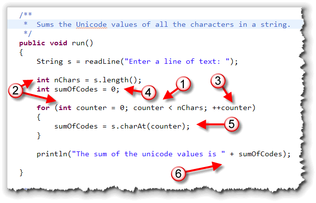
The loop shown here is from CodeSumer.java, an ACM console program that sums up the value of each Unicode character in aString entered
by the user, and tells you how much your String
"weighs".
Notice how the structure of the for loop follows the
six steps you met in the loop-building lesson:
- The bounds is when our counter reaches the number of characters in the string.
- To test the counter and number of characters, we first
have to create the variables
counter,nChars, ands, so that they can be tested when we get to the bounds. We also have to initialize them, by first reading the text the user entered, usingreadLine(), finding the length of the string, using thelength()method, and initializing the counter in theforloop's initializer section. All of these are part of "Step 2", writing the bounds preconditions. - Step 3 is to advance the loop. In a counted
forloop, you do that in the update expression. - This loop's output is the sum of all the individual
code values, so Step 4, the goal precondition, involves creating
and initializing the accumulator variable
sumOfCodes. - Since we're adding up all of the Unicode values in the
string, Step 5, the loop operation, is accomplished by extracting
each individual character, using the
charAt()method, and then adding that value to the accumulator. - For the last step, the goal postcondition, we simply print out the loop's results. There's nothing extra we have to test in this case.
Here's what the output of the program looks like with my name entered as input:
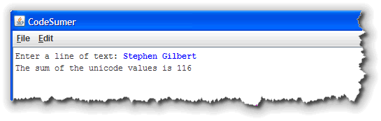
Counting Down
When you create a counted loop using for, you
are responsible for initializing the counter in the
intitialization expression, and for updating it in the update
expression; it doesn't happen "automatically" like it does
in BASIC or Pascal.
However, there's no law that says you have to start at zero, and there's nothing to stop you from counting down rather than up.
Here's a code fragment from a Java Applet named
ReverseString that displays the characters in a
String in reverse order. It works by walking
through the characters of the String from the end
to the beginning, using a for loop that:
- initializes
counterto point to the last character, rather than the first - continues until
counterreaches zero - decrements the
counter, so that the loop counts down, instead of counting up
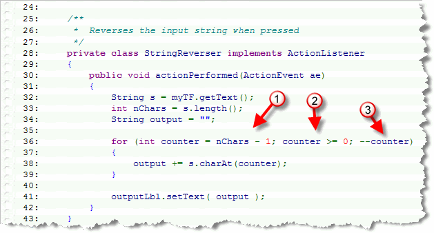
You can run the applet by clicking the link in this sentence. If you don't want to run it, here's what it looks like with my name entered into the input field:
What's with the -1?
You might wonder why the code shown here subtracts one from
the length of the String in the initialization expression.
In a String, the characters are numbered starting with
zero. Thus, if there are 10 characters in a particular
String, then the last character is in position 9.
Counting by Steps
Not only can you count up and count down, you can
also count by values other than 1, simply by changing the value
in the update expression. The BASIC language allows you do do
this via its STEP clause, but the Java for loop
allows you to use any expression you like, not just different
constant values.
Here, for instance, is how you could calculate the sum of all the even numbers less than 100:
int sum = 0;
for (int i = 2; i < 100; i += 2)
{
sum += i;
}
And, here's a loop that displays exponential growth. How many numbers do you think that this will print?
for (int i = 2; i < 10000; i *= i)
{
println(i);
}
Try it out and see if you're right.
Nested Loops
When you put one if statement inside the body of
another if statement, you have a nested
if statement. You can do the same thing with loops.
As you'd expect, these are called nested loops.
When you stick one loop inside another loop, the first loop
encountered is called the outer loop, and the
next is called the inner loop.
Here's an example of a pair of nested for
loops that print a multiplication table. This is taken from
the ACM console application, TimesTable.java:
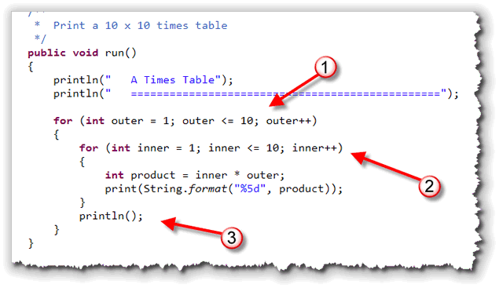
With a the nested loops shown here, every repetition of the outer loop (1) contains ten repetitions of the inner loop (2). Every time the outer loop goes round once, the inner loop goes through it's entire set of repetitions. Notice that inside the inner loop, each value of product
is printed to the console window using the print()
statement (so each value appears on the same line), and formatted
using String format(), using a field width specifier,
so that both the small numbers and the large numbers take the same
amount of space on the line, and so that the columns line up.
After the inner loop finishes, the outer loop contains one more
statement, a plain println() that advances the
cursor to the next line.
Often, you'll find it easier to understand a nested loop, by reading it "from the inside out". Figure out what the inner loop does first. Then, for every repetition of the outer loop, perform the inner loop actions.
Here's what the program looks like when you run it:
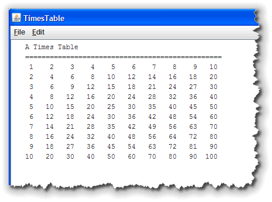
Improvements
A first improvement would be to label both the rows and
columns in our table. Fortunately, that's pretty easy
because we can use the counter variables and some constants
like this:
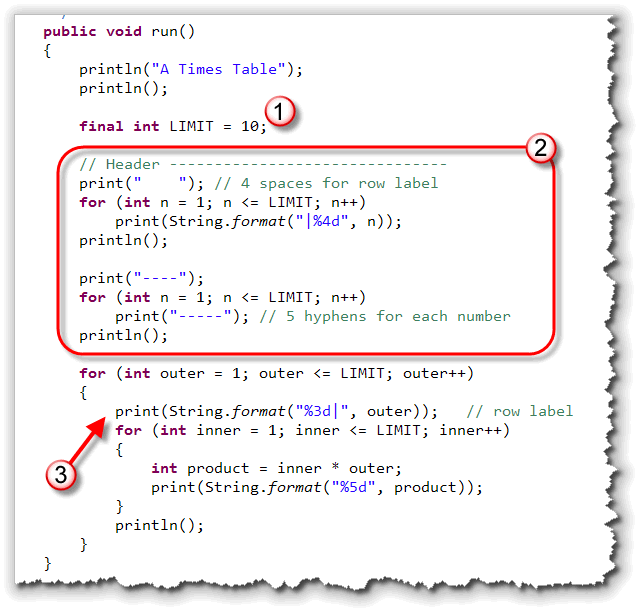
Notice that:- I've replaced the literal magic number with a constant and then used that constant over and over.
- I've addded a set of sequential
forloops to print the column labels and the separator that appears below it. - I've added a single
print()statement, inside the outer loop and before the inner loop that is used to print the row labels.
Here's what the program looks like after this improvement:
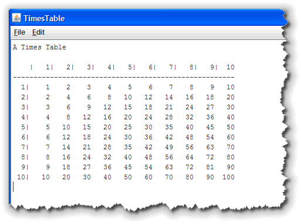
Interactive Times Table
We can make the program interactive by just replacing
the constant LIMIT with a variable, and then asking
the user for the upper limit, like this:
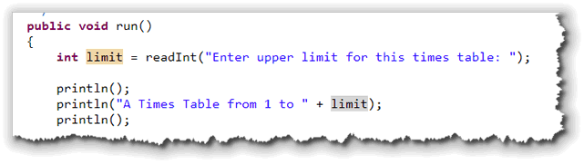
Here's what that looks like when it runs:
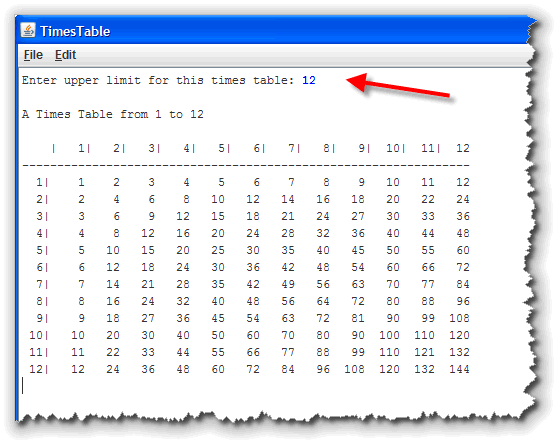
Eliminate Redundancy
Finally, notice that each product in the table appears twice: once when we multiply the row by the column and again when we multiply the column by the row. We can eliminate this redundancy by using the outer loop counter as the inner loop limit.
In other words, the inner loop will no longer go from
1 to limit each time, but will go from
1 to outer; the number of inner loop repetitions
will vary in response to the outer loop counter variable,
like this:
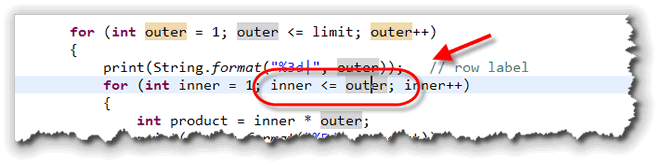
Here's what that looks like when it runs:
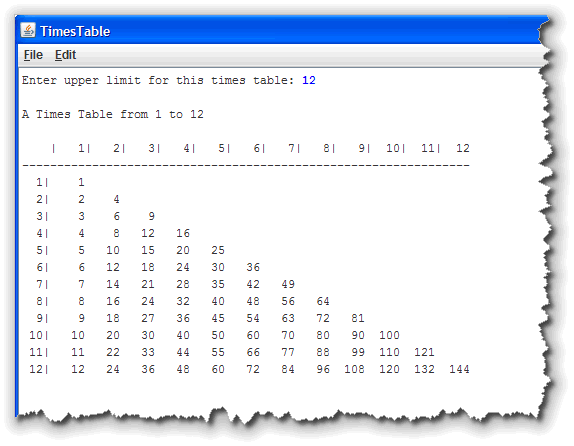
Loops and Functions
Let's finish up this lesson by learning how to use the
for loop to solve String problems.
To do that, let's return to JavaBat and look at
the doubleChar problem in the String2 section:
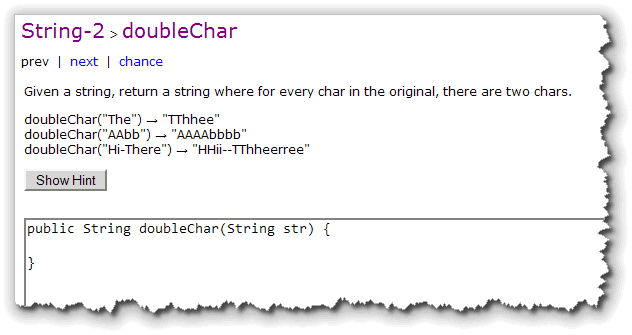
Solving String Problems
You'll normally want to attack these kinds of problems using the same basic strategy. Here's how to do that:
Step 1: Return Type
Even though all of the problems in this section process
Strings, they don't necessarily return
String values. Some will, but others will return
int or boolean values.
My first step is always to create an "empty" variable of the
correct type and then add a return statement, so that I can
run the program and see what the tests do. Here's what you'd
do for doubleChar():
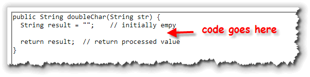
Step 2: Loop through the String
This group of problems all requires the use of loops.
Because you can easily find the length of the String,
you'll almost always use the for loop. Here's the
general pattern that I follow, even before I give any thought
to what my code is actually going to do:
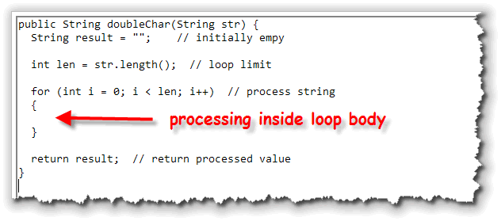
Step 3: What's the Goal?
Now we're ready to look at what the output should be. In this case, we want our output to contain two characters for each character in input.
In general, if you want to examine every character, you can do it like this:
char ch = str.charAt(i);
or, you can do it like this:
String chStr = str.subString(i, i + 1);
The first technique gives you back a char
variable which is easy to compare using the various
relational operators. You'll have to use the second
technique if you need to process more than one character
on each repetition.
In this case, we can go either way. We need to grab each
character and then "paste" that character onto the output
String two times to double it. Here's a version
using charAt():
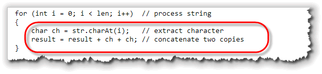
Notice that you need to concatenate the characters with theString output, not add the two characters
together and concatenate that. Concatenation works with
Strings, not characters. If you were to
write this:
result += ch + ch;
the two characters would be added as Unicode characters and
the resulting numeric value would be pasted onto the
end of your String.
Here's a version of the same loop, using the substring()
method instead of charAt():
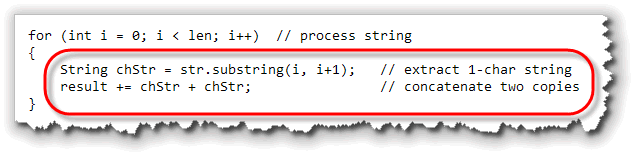
A Second Example
Let me show you a second example, just to make sure you have the
idea. This is also from JavaBat, and is the String2 problem named
countHi. All you need to do is count the number of times
that the word "hi" appears in the given String.
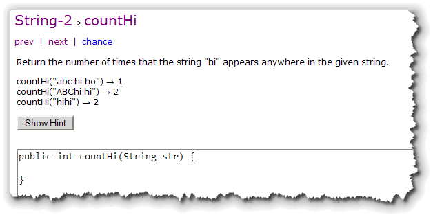
The first step is exactly like the previous problem. Because the
return type of this function is int, I create a
numeric variable (instead of a String), and return that:
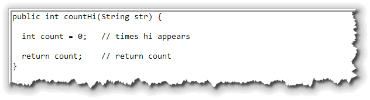
The second step is very similar to last problem, but has a
little twist that you need to pay attention to. In the
first problem, our loop when through each character
in the String.
In this problem, we are looking for
a two-character wide String, so we can't
loop through the entire String, because we
will be extracting two characters at a time, instead of only
one. If we looped through the entire String, then
when we got to the last character, and then tried to get a
substring consisting of the next two characters, the
program would generate an "out of bounds" runtime error.
In general, if was intend to extract or examine n
characters, then our loop should go from 0 to len - (n - 1)
like I've done here:
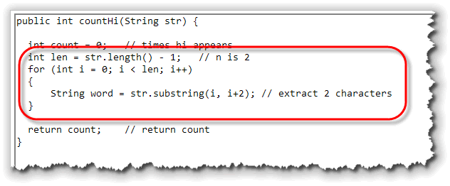
Note also, that thesubstring extraction code
always looks like str.substring(i, i + n)
where n is the number of characters for the resulting
substring.
Finally, to compare the extracted substring with the literal
value "hi", you need to use the equals() method.
If equals() returns true, then you'll
increment your counter. Here's what the final loop
looks like:
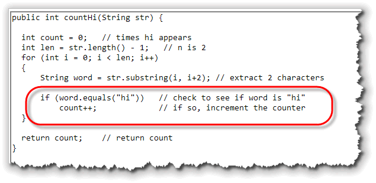
Coming Up ...
That's it for this week. Check the Exercises page for the assignments this week and make sure you complete the Unit 4 Quiz.
See you in class!